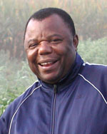

Objective 6 - Scientists & Staff
Obj. 6 - Train the next generation of scientists, develop science education curricula and promote learning opportunities for high school teachers and students.
Jump to:
Moore
 |
Richard H. Moore Principal Investigator; Obj. 5; Obj. 6 (lead) The Ohio State University Faculty Web site Professor & Asst. Dir. - School of Envir. & Nat. Resources |
Rachel Hintz |
Colletti
 |
Joe Colletti, |
Lekies
Kristi Lekies |
Miller
| William Wade Miller (Wade) Principal Investigator; Obj. 6 Iowa State University Faculty Web site Professor - Ag Ed & Studies |
|
| Not Pictured: | Matthew Shultz |
Nkongolo
|  | Nsalambi Nkongolo |
Todey
 |
Dennis Todey |